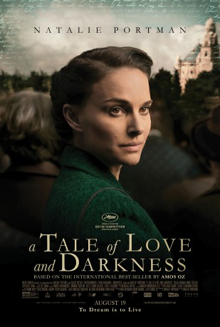
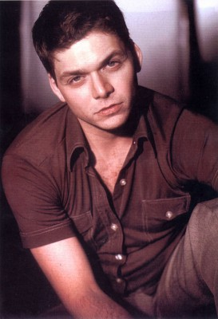
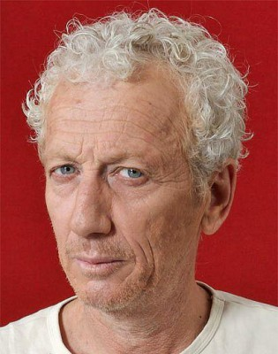

#5734 Eine Geschichte von Liebe und Finsternis
 
 IMDB-Wertung: 6.1 / 10
IMDB-Wertung: 6.1 / 10  Metascore: 0
Metascore: 0 
Based on the international best-seller by Amos Oz, A TALE OF LOVE AND DARKNESS is the story of his youth, set against the backdrop of the end of the British Mandate for Palestine and the early years of the State of Israel. The film details the young man's relationship with his mother and his beginnings as a writer, while looking at what happens when the stories we tell, become the stories we live.
Jahr: 2015
Dauer: 98 Minuten
FSK:
Land: Israel Studio: Focus WorldTonspuren:
Untertitel: Deutsch,
Auflösung: 1080p (1920x800) Größe: 5007 MB
Genre: Drama, Biographie
Regisseur:  Natalie Portman
Natalie Portman
Drehbuch: Alex Penate
Soundtrack:
Darsteller:
 Natalie Portman als Fania Klausner né Mussman
Natalie Portman als Fania Klausner né Mussman- Tomer Kapon als The Pioneer
- Shira Haas als Kira
-  Ohad Knoller als Israel Zarchi
 Makram Khoury als Halawani
Makram Khoury als Halawani-  Moni Moshonov als Old Amos
- Gilad Kahana als Arieh Klausner
- Amir Tessler als Amos Klausner
- Zina Zinchenko als Ira Strelecki
- Vladimir Friedman als Mr. Licht
- Mor Cohen als Zerta Abramski
- Henry David als Colonel Jan
- Rotem Keinan als Tsvi
- Neta Riskin als Haya
- Dina Doron als Grandma Klausner
- Noa Raban als Mother
- Asia Naifeld als Lilenka
- Bar Sade als Sonia
- Gera Sandler als Staszek Rudnicki
- Alexander Peleg als Amos Oz, old
- Hadar Rotem Ratzon als Woman at Party
- Itzchak Peker als Grandpa Klausner
- Dima Ross als Pharmacist
- Aliza Ben-Moha als Singer at the Market
- Yuval Gal als School Boy
- Yonaton Shiray als Amos Klausner / Oz, teenage
- Carmi Strak Harari als Yigal
- Igal Reznik als Bus Rider
- Gillian Buick als Woman at Party
- Lola Cohen als Woman at Party
- Varda Ben Hur als Operator
- Edie Rush als Arieh's Lawyer
- Amir Hinkis als Yoni
- Agan Omer als Young Sonia
- Kamila Jarosinska als Ration Line Woman
- Peter Knoller als Boy
- Rom Lahmish als School Boy
- Zvi Salton als Radio Announcer
- Errel Steinmetz als Lolik
- Or Shefer als Garibaldi
- Maria Belkin als Pharmacy Customer
- Salina Daw als Aisha
- Naama Israeli als Yiung Haya
- Yizhar Haas als Kibbutz Teacher
- Henri Goldman als Fania's Doctor
- Yehudit Moskowitch als Neighbor
- Nadezda Tichonova als Ration Line Woman
- Dana Kotchrovsky als Neighbor
- Vladimir Vorobev als Bus Rider
- Shimon Mendel als Waiter
Datei: X:\2015(G-M)\Geschichte von Liebe und Finsternis, Eine (2015, FSK, 1920x800).mkv seit 16.03.2017
Festplatte: HD 2015(A-Z)
 Es gibt insgesamt 129 Filme in der Gruppe '2015(G-M)'
Es gibt insgesamt 129 Filme in der Gruppe '2015(G-M)'